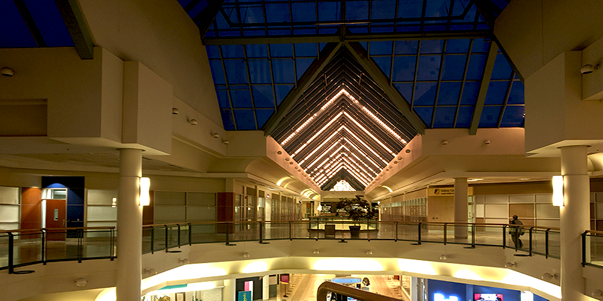

Welcome To Dead Malls London
This website is dedicated to the phenomenon known as “Dead Malls”. Dead malls are defined by high vacancy rate and low foot traffic. We will explore several malls located in London, Ontario that are often referred to as dead in an attempt to decide whether these claims are true.
Feel free to contact us with any relevant information or questions regarding these, or any other malls located in London!
